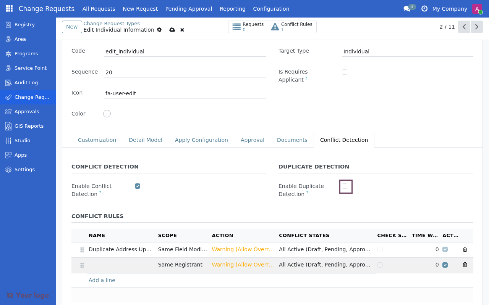

Conflict and duplicate detection
Contents
Conflict and duplicate detection#
OpenSPP can automatically detect when change requests might conflict with each other or when duplicate requests are submitted. This helps prevent data inconsistencies and reduces redundant work.
Conflict detection#
Conflict detection identifies when multiple change requests might affect the same registrant data in incompatible ways.
Enabling conflict detection#
On the Change Request Type form, check Enable Conflict Detection to activate this feature. Then configure one or more conflict rules.

Conflict rules#
Each rule defines what constitutes a conflict and how to handle it.

Field |
Description |
|---|---|
Name |
Descriptive name for the rule |
Scope |
What to check for conflicts (see below) |
Action |
What happens when conflict is detected |
Conflict States |
Which CR states to check against |
Time Window |
Only check CRs within this time (hours, 0 = no limit) |
Scope options#
Scope |
Description |
|---|---|
Same Registrant |
Check CRs for the same registrant |
Same Group/Household |
Check CRs for all members of the same group |
Same Field Modified |
Check only if the same field is being modified |
Custom Logic |
Use Python hook for complex scenarios |
Action options#
Action |
Behavior |
|---|---|
Block Submission |
Prevent CR submission entirely |
Warning (Allow Override) |
Show warning but allow override with permission |
Log Only |
Log the conflict without notifying the user |
Additional options#
Field |
Description |
|---|---|
Check Same Type Only |
Only check for conflicts with CRs of the same type |
Conflicting CR Types |
Specific CR types to check against (if not same type only) |
Conflict Fields |
Comma-separated list of fields to check (for field scope) |
Conflict Message |
Custom message to display when conflict is detected |

Example: Prevent duplicate phone updates#
To prevent multiple phone number changes for the same person within 24 hours:
Field |
Value |
|---|---|
Name |
Prevent Duplicate Phone Updates |
Scope |
Same Registrant |
Check Same Type Only |
Yes |
Action |
Block Submission |
Conflict States |
Pending Only |
Time Window (hours) |
24 |
This rule will:
Check only CRs of the same type
Only for the same registrant
Only if there's a pending request
Within the last 24 hours
Block submission if a conflict is found
Example: Warn on household changes#
To warn when any member of a household has pending changes:
Field |
Value |
|---|---|
Name |
Household Change Warning |
Scope |
Same Group/Household |
Check Same Type Only |
No |
Action |
Warning (Allow Override) |
Conflict States |
All Active |
Time Window (hours) |
0 |
This rule will:
Check all active CRs for any household member
Show a warning but allow override
Apply regardless of time
Duplicate detection#
Duplicate detection identifies when a change request is essentially the same as an existing request, helping prevent accidental double submissions.
Enabling duplicate detection#
Check Enable Duplicate Detection on the CR type form and configure the detection settings.

Configuration options#
Field |
Description |
|---|---|
Time Window (hours) |
Only check for duplicates within this period (default: 48) |
Similarity Threshold |
Minimum similarity percentage (0-100) to flag as duplicate |
Check Fields |
Comma-separated list of fields to compare (empty = all fields) |
Auto-Merge Enabled |
Automatically merge exact duplicates (100% similarity) |
Auto-Merge States |
Which states allow auto-merging (Draft Only / Draft and Pending) |
Similarity calculation#
The system compares field values between requests:
100% similarity = all compared fields have identical values
Partial similarity = some fields match
Auto-merge behavior#
When auto-merge is enabled and an exact duplicate (100% similarity) is detected:
If the existing CR is in an allowed state (draft/pending), the new submission is merged
The newer submission is discarded
The user is notified of the merge
Note
Duplicate detection is particularly useful for preventing accidental double submissions, especially when change requests are created from external sources like mobile apps or API integrations.
Example: Prevent duplicate address updates#
Field |
Value |
|---|---|
Time Window (hours) |
72 |
Similarity Threshold |
90 |
Check Fields |
street,city,zip,country_id |
Auto-Merge Enabled |
Yes |
Auto-Merge States |
Draft Only |
This configuration:
Checks for duplicates within 3 days
Flags as duplicate if 90%+ of address fields match
Auto-merges exact duplicates in draft state
Best practices#
Conflict detection#
Start with warnings - Use "Warning" action initially to understand patterns before blocking
Use time windows - Set reasonable time limits to avoid blocking legitimate re-submissions
Be specific - Use field-level scope when only specific changes should conflict
Document rules - Add clear conflict messages explaining why submission was blocked
Duplicate detection#
Set appropriate thresholds - 90%+ similarity catches most duplicates without false positives
Choose fields carefully - Only compare fields that indicate true duplicates
Enable auto-merge cautiously - Start with draft-only auto-merge
Consider external sources - Mobile apps and API integrations benefit most from duplicate detection
Troubleshooting#
Conflicts not being detected#
Checks:
Is Enable Conflict Detection checked?
Is at least one conflict rule defined and active?
Are the conflict states correct? (check pending vs approved)
Is the time window appropriate?
Too many false positives#
Checks:
Consider using "Same Type Only" to narrow scope
Reduce time window
Use field-level scope instead of registrant-level
Change action from "Block" to "Warning"
Duplicates not merging#
Checks:
Is similarity threshold too high? (try 95% instead of 100%)
Are the right fields being compared?
Is auto-merge enabled?
Is the existing CR in an allowed state?
See also#
Creating change request types - Basic configuration steps
Common configuration patterns - Common configuration patterns
Troubleshooting - More troubleshooting tips